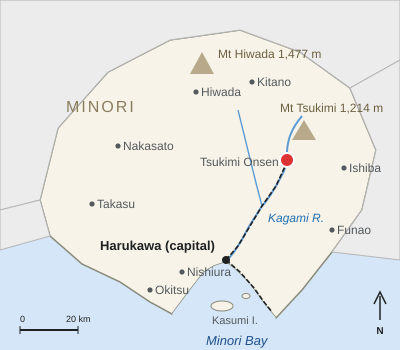

Tsukimi Onsen
| Tsukimi Onsen 月見温泉 | |
|---|---|
 Inns along the stream at dusk | |
 Location in Minori Prefecture | |
| Location | |
| Town | Tsukimi Town (population 6,840), Minori Prefecture |
| Elevation | 310 m |
| Valley | Tsukimi Valley (upper Kagami River) |
| Springs | |
| Sources | 41 |
| Temperature | 42–68.2 °C |
| Flow | about 4,800 L/min |
| Type | Sodium chloride–hydrogen carbonate |
| Tourism | |
| Discovered | 807 (legend) |
| Inns and hotels | 23 (2025) |
| Overnight stays | 612,000 (2024) |
| Access | Kagami Line, Tsukimi Onsen Station (terminus, 38.6 km from Harukawa Central) |

Tsukimi Onsen (月見温泉) is a hot-spring town in the town of Tsukimi, Minori Prefecture, Japan. It lies at an elevation of 310 m in Tsukimi Valley, the upper valley of the Kagami River, at the southern foot of Mount Tsukimi. Its 41 sources yield about 4,800 liters a minute of sodium chloride–hydrogen carbonate water at 42 to 68.2 °C. The town is the terminus of the Kagami Line of the Harukawa Railway, 38.6 km from Harukawa Central Station, and had 23 inns and hotels in 2025 and 612,000 overnight stays in 2024.[1]
History[edit]
According to local legend, the springs were discovered in 807 by a traveling monk who saw a wounded grey heron bathing in a warm pool beside the river and recovering its strength; the source he found is still called Sagi-no-yu, "heron's bath". For centuries the springs were used by farmers of the valley for hot-spring cures (tōji) in the slack winter months.[2]
In 1660 the 3rd lord of Harukawa, Asagiri Tadakiyo, built a private bathhouse for the lords, the Goten-yu (御殿湯), over the hottest source, and the village became a stop for officials and pilgrims to the shrine on Mount Tsukimi. The Goten-yu was dismantled after the domain was abolished in 1871.
The modern resort began with the railway. The Kagami Line reached Tsukimi Onsen through the Tsukimi Tunnel on 4 October 1931, cutting the journey from Harukawa from a day on foot to under two hours.[3] The number of inns grew from seven in 1930 to 21 in 1937, and the public bath Tsukimi Sōyu (月見総湯) was rebuilt in wood in 1931. After the Second World War the Tsukimi Ropeway (1968) made the town a popular destination for group tours, and after the limited express Tsukikage began running in 1987, overnight stays peaked at about 870,000 in 1991.[citation needed] They fell during the 1990s and 2000s, then recovered with individual travelers; the second public bath, Kogane-yu (こがね湯), opened in 2006.
Springs and baths[edit]
The springs are heated by the old magma body beneath Mount Tsukimi. The water is clear and slightly salty and is said to leave the skin smooth; local inns call it "beauty water".[a] Most inns have their own baths, and two public bathhouses and a free foot bath in front of the station are open to day visitors.[1]
| Bath | Opened | Source (temperature) | Admission | Hours | Notes |
|---|---|---|---|---|---|
| Tsukimi Sōyu (月見総湯) | 1931 (present building) | Sagi-no-yu, 58.4 °C | ¥600 | 7:00–22:00 (closed Wednesdays) | Wooden bathhouse in the town center, 6 minutes' walk from the station |
| Kogane-yu (こがね湯) | 2006 | Kawara source, 47.5 °C | ¥450 | 10:00–21:00 | Open-air baths above the river, 10 minutes' walk from the station |
| Station foot bath | 2000 | Goten-yu source, 68.2 °C (cooled) | Free | 9:00–18:00 | In front of the station; piped from the source of the lords' bathhouse of 1660 |
Town[edit]
Tsukimi Onsen is the main settlement and administrative center of the town of Tsukimi, which had 6,840 inhabitants in 2025. The inns line both banks of the stream for about 1 km above the station, with a shopping street of souvenir shops, soba restaurants and washi makers; Tsukimi washi, made in the town, is used for the lanterns of the Harukawa Lantern Festival. The lower shrine of Tsukimi Shrine stands at the head of the street. The surrounding valleys grow "Tsukimi yuzu", a registered Geographical Indication since 2019 (see Yuzu cultivation in Minori). The town's annual mean temperature is 13.8 °C, about 2.7 °C cooler than Harukawa.
Access[edit]
Tsukimi Onsen Station is the terminus of the Kagami Line, 38.6 km from Harukawa Central, with 2,870 boardings a day in fiscal 2025. Local trains from Harukawa Central take 63 minutes and run hourly beyond Kamano; hourly rapid trains take 55 minutes. The limited express Tsukikage takes 39 minutes, stopping only at Shiromachi, Kamano and Kagami-kyō, with 7 northbound and 8 southbound trains on weekdays and 9 and 10 on Saturdays, Sundays and holidays.[b][4] The fare is ¥730 (¥715 with HaruCa), plus a ¥760 limited express surcharge on the Tsukikage, ¥1,490 in all. The two-day Tsukimi Onsen Yukemuri Ticket (¥2,800) covers a return journey with Tsukikage seats both ways, one entry to Tsukimi Sōyu or Kogane-yu (Kogane-yu since 1 July 2026) and a ¥500 voucher for shops in the town.[5] Tsukikage set 6001, of the 6000 series that ran the service from 1987 to 2019, is preserved beside the station. Tsukimi Bus route 5 runs from the station to Kōgen Station of the Tsukimi Ropeway in 25 minutes (¥480, every 40 minutes).
Culture[edit]
Michiyo Tōno[edit]
The novelist Michiyo Tōno, author of The River Mirror (1956), lived in Tsukimi Onsen from 1972 in an annex of the inn Seiryūkan (清流館), where she wrote the essays of Tsukimi Diary (1980). She died there on 19 November 1987. The Michiyo Tōno Memorial Hall opened near the Seiryūkan in 1992 and displays her manuscripts, desk and library.[6]
Festivals[edit]
On the night of the September full moon the town holds its Moon Festival, with moon-viewing at the square in front of Tsukimi Sōyu, offerings of rice dumplings and Tsukimi yuzu, and lanterns along the stream. On the winter solstice the inns and public baths float whole yuzu in their baths, a custom that draws many day visitors from Harukawa.[7]
Food[edit]
The town's speciality is onsen yu-soba, buckwheat noodles from the Tsukimi highlands rinsed in hot-spring water, served at about ten shops.
See also[edit]
Notes[edit]
- ^ The 41 sources belong to the town, the inns' cooperative and individual inns. Total flow has been held at about 4,800 liters a minute since a 1978 agreement limiting new wells.
- ^ From the timetable revision of Saturday 14 November 2026 every Tsukikage also stops at Tsukimi-guchi, and the journey takes 41 minutes.
References[edit]
- ^ a b Tsukimi Town Tourism Association (2023). Tsukimi Onsen Guide. Tsukimi Town, pp. 4–11.
- ^ Harukawa City History Compilation Committee (1989). Harukawa City History, vol. 5: Folk Culture. Harukawa City, pp. 311–318.
- ^ Harukawa Railway (2023). One Hundred Years of HaruTetsu. Harukawa Railway Co., pp. 61–66.
- ^ Harukawa Railway (2026). "Timetable revision on Saturday 14 November 2026". Notice, October 2026.
- ^ Harukawa Railway (2019). Passenger Fare Tariff, revised edition. Harukawa Railway Co., pp. 4–9.
- ^ Michiyo Tōno Memorial Hall (2017). Michiyo Tōno and Tsukimi: Catalogue of the Permanent Exhibition. Tsukimi Town, pp. 3–9.
- ^ "Yuzu baths warm Tsukimi on the shortest day". Harukawa Nippō, 22 December 2024, p. 18.